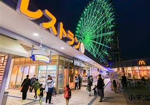

(日幣/人)


| 時間 | 活動與地點 | 用餐與花費 (日幣/人) |
特色、詳細介紹及推薦商品 | 照片 | 相關網址 |
|---|---|---|---|---|---|
| 05:30-07:00 | 桃園機場集合與登機 | 機票依預訂情況 | 準備出發大阪，開啟五天四夜的旅程。 | |
桃園機場官網 |
| 07:00-10:25 | 搭乘虎航 IT210 抵達關西機場 | - | 飛行時間約3.5小時。 | |
虎航官網 |
| 10:25-11:30 | 入境手續 | - | 抵達大阪關西機場，辦理入境手續。 | |
關西機場官網 |
| 11:30-12:00 | 前往臨空城 | ¥370 | 搭乘南海電鐵前往臨空城，車程約10分鐘。 |  | 臨空城官網 |
| 12:00-12:20 | 行李寄放（臨空城） | ¥300 | 臨空城提供行李寄放服務，方便購物。 | |
- |
| 12:20-12:30 | 前往午餐地點 | - | 前往臨空城內的餐廳。 | |
- |
| 12:30-13:30 | 午餐：お好み焼き美津 | ¥2,500 | 傳統大阪燒，外酥內軟，搭配特製醬料。 | |
お好み焼き美津官網 |
| 13:30-15:30 | 臨空城購物 | - | 關西最大品牌折扣商場，適合購買名牌服飾等。 | |
臨空城官網 |
| 15:30-15:40 | 取行李 | - | 在臨空城取回寄放的行李。 | |
- |
| 15:40-16:40 | 搭乘 Klook 包車至住宿地點 | ¥2,000 | 使用 Klook 包車服務，直接前往大阪市區住宿。 | Klook 包車服務 | |
| 16:40-17:00 | 辦理入住並稍作休息 | - | 在酒店辦理入住手續，放置行李，稍作休息。 | |
住宿酒店官網 |
| 17:00-17:30 | 前往心齋橋商店街 | ¥230 | 搭乘地鐵御堂筋線前往心齋橋。 | |
心齋橋商店街官網 |
| 17:30-19:00 | 心齋橋商店街體驗購物 | - | 購物區擁有大阪小吃與特色精品。 | |
- |
| 19:00-20:00 | 晚餐：吟座牛一筋 | ¥4,500 | 高品質和牛壽喜燒套餐，濃郁飽足。 | |
吟座牛一筋官網 |
| 20:00-20:30 | 前往梅田藍天大樓 | ¥230 | 搭乘地鐵前往梅田，步行至藍天大樓。 | |
梅田藍天大樓官網 |
| 20:30-21:30 | 梅田藍天大樓空中庭園展望台 | ¥1,500 | 欣賞大阪全景夜景，體驗浪漫氛圍。 | |
空中庭園展望台官網 |
| 21:30-22:00 | 返回住宿 | ¥230 | 結束第一天行程，返回住宿休息。 | |
- |
| 時間 | 活動與地點 | 用餐與花費 (日幣/人) |
特色、詳細介紹及推薦商品 | 照片 | 相關網址 |
|---|---|---|---|---|---|
| 07:30-08:00 | 前往黑門市場 | ¥230 | 搭乘地鐵前往黑門市場，體驗大阪的「廚房」。 |  |
黑門市場官網 |
| 08:00-09:30 | 黑門市場體驗與早餐 | ¥2,000 | 品嚐新鮮海鮮和當地小吃，如鮪魚丼、烤海鮮。 |  |
- |
| 09:30-10:00 | 前往四天王寺 | ¥230 | 日本最古老的佛教寺院之一，歷史悠久。 |  |
四天王寺官網 |
| 10:00-11:30 | 四天王寺參觀 | ¥300 | 參觀五重塔、石鳥居等文化財，感受佛教文化。 |  |
- |
| 11:30-12:00 | 前往新世界地區 | 步行 | 漫步至新世界，感受昭和時代的懷舊氛圍。 |  |
- |
| 12:00-13:00 | 午餐：串かつだるま（新世界總本店） | ¥2,000 | 大阪著名的串炸店，品嚐各種酥脆可口的串炸。 |  |
串かつだるま官網 |
| 13:00-14:00 | 通天閣參觀 | ¥700 | 大阪地標之一，登上觀景台俯瞰城市景色。 |  |
通天閣官網 |
| 14:00-14:30 | 前往天保山地區 | ¥280 | 搭乘地鐵前往大阪港，探索天保山。 |  |
- |
| 14:30-16:00 | 天保山摩天輪 | ¥800 | 搭乘曾是世界最大摩天輪，欣賞大阪港美景。 |  |
天保山摩天輪官網 |
| 16:00-18:00 | 海遊館參觀 | ¥2,400 | 世界最大的水族館之一，展示豐富的海洋生物。 |  |
海遊館官網 |
| 18:00-18:30 | 前往道頓堀 | ¥230 | 搭乘地鐵返回市中心，準備晚餐。 |  |
- |
| 18:30-21:00 | 道頓堀小吃晚餐 | ¥4,500 | 品嚐章魚燒、大阪燒、炒麵等經典小吃。 |  |
- |
| 21:00-21:30 | 返回住宿 | ¥230 | 結束第二天行程，返回酒店休息。 | |
- |